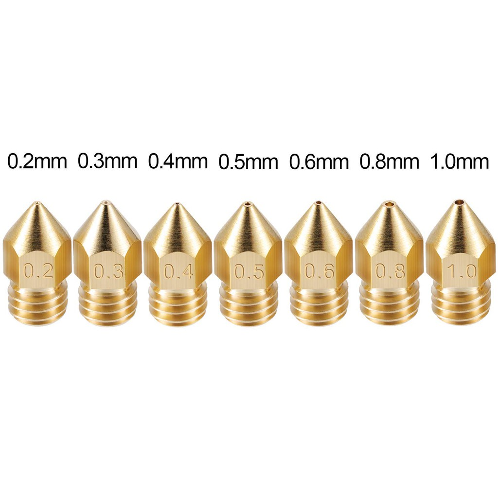
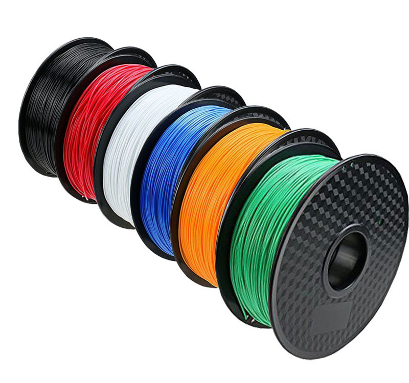
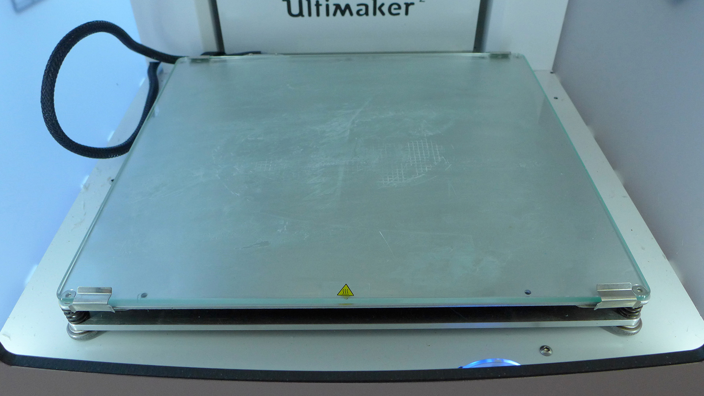

Introduction to 3D printing
For 3D printing, we used the Cura Ultimaker 2+ machine, and the Cura software. The Cura software allows us to scale and change the properties of the print. The more common properties that we change is the infill, layer height, print speed, support and built plate adhesion. The software can be seen below.
.png)
Properties
Layer height is the quality of the print. A smaller layer height will result in a smoother finish and a better resolution on the finished piece. However, a smaller layer height will also increase the time required for printing. The max layer height depends on the machine and the size of the nozzle.
The infill controls the amount of plastic in the finished product. A higher infill will result in a longer printing time but the finished product will be more durable and will be less likely to break. The more common percentages of infill in the Fablab are 15% and 20%
The print speed is how fast it prints. A higher print speed will affect the quality of the finished print and printing at too high a speed might cause the filament to slip while printing. The common printing speedd used inn the Fablab is between 60 to 80 mm/s
Supports are used when there is an overhang or when bridging might occur. The supports will prevent the print from failing.Examples of overhang and bridging can be seen below.
Ther are 3 types of built plate adhesion used, skirt, brim and raft. Skirts are used when there is poor material flow, an unlevel printing bed or poor layer adhesion. Brim is used when there is warping, poor print adhesion, a narrow base, when the print is risky and when there are weak supports. Raft is used when there is poor print adhesion and when the base is really small. Examples of all the built plate adhesions can be seen below.
Parts of the 3D printer
Moving on from the software, we will now cover the important parts of the 3D printer. The important parts of the 3D printer are the nozzle, the filament, the controller board, the print board and the feeder system.
The controller board is the brain of the 3D printer. It’s the one responsible for the core operation, directing the motion components based on commands sent from a computer and interpreting input from the sensors.

The nozzle is where the melted filament comes out. It comes in different sizes, with 0.4-millimeter nozzles being the default for most 3D printers. The smaller the nozzle, the higher the print detail. On the flip side, the larger the nozzle, the faster the print speed.
The filament is what becomes your 3D print. Filaments come in different diameters, colours and materials.
The print bed is where the extruder deposits the filament to form a solid object.Printer beds are either heated or not heated and tend to be made out of aluminium or glass. Glass being flatter and easier to maintain, while aluminium being easier to heat up. In the Fablab, the Cura Ultimaker 2+ has a heated glass print bed.
Lastly the feeder system feeds the filament from the reel into the extruder to be melted and printed.

A video of me 3D printing a part of my final project can be seen below.